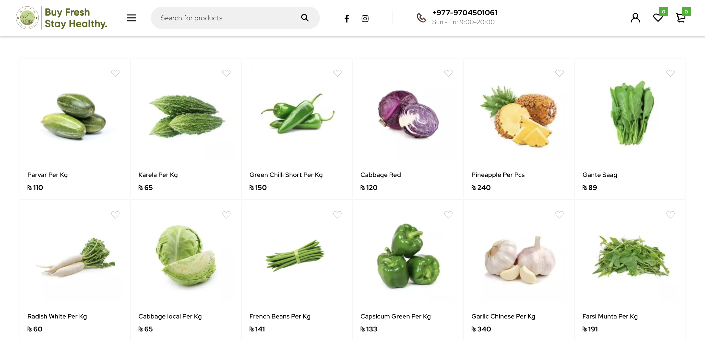

First and foremost, as an e-commerce platform specializing in healthy and authentic grocery products, our journey began with a visit to Mato.com.np, Nepal's leading brand in organic living.
While brainstorming the range of grocery products to feature, we made a deliberate choice to prioritize Nepali-grown organic goods. Our focus on locally sourced products not only benefits you, our customers, but also supports our farmers and contributes to the prosperity of our nation. As a result, our catalogue exclusively showcases Nepali organic produce, with no imported items.